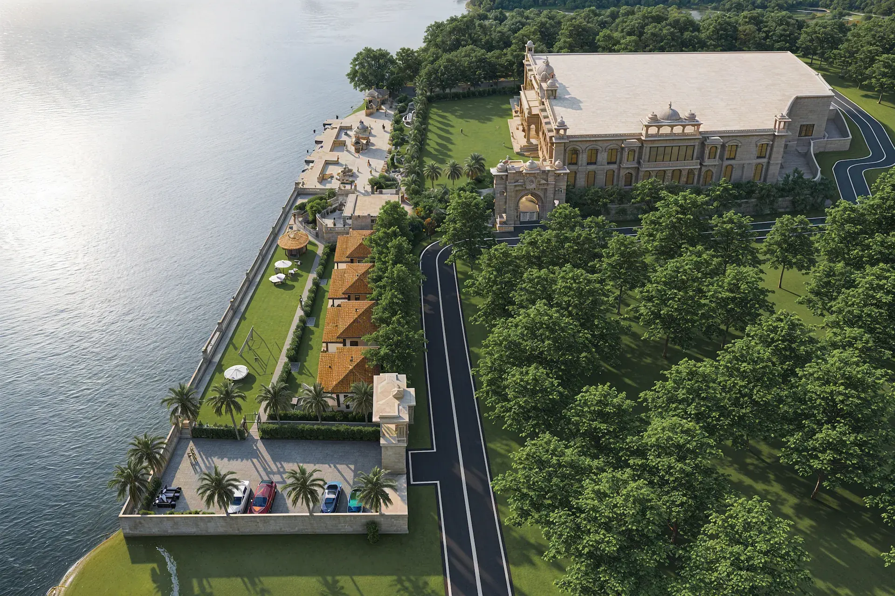

Water is the reason most waterfront resorts exist. It sets the room rate, fills the wedding calendar and gives every photograph its backdrop. It is also the part of the site most likely to flood, erode or bring a stop-work notice.
Whether the site sits on a river, a lake, a reservoir or the coast, the same questions decide the design. How close can you build? Where does the water go in a bad monsoon? Which rooms get the view, and which buildings sit behind them? How do guests reach the water safely, and how does the public keep its access?
This guide covers waterfront resort architecture and site planning for Indian projects: site analysis, the rules that set building lines, zoning, views, flood resilience, materials and access to the water. It draws on our riverfront work on the Ganga at Prayagraj and builds on our guide on how to design a resort in India.
Why Waterfront Resorts Need a Different Approach
On an ordinary site, the architect starts from the road, the plot boundary and the building rules. On a waterfront site, the water edge comes first. It moves with the seasons, it is often covered by its own set of rules, and it is the one view every guest wants.
Three things make these projects harder than they look:
- The edge is not fixed. Rivers rise in the monsoon, lakes swell after heavy rain and the coast shifts with tides and storms. The line on a survey drawn in April may be under water in August.
- The edge is regulated. Coastal rules, river orders, wetland rules and local authority bye-laws can all set a line inside which you cannot build.
- The edge is shared. Ghats, beaches and lake shores often carry public use, religious practice or fishing rights that the resort must respect.
A good waterfront plan puts these constraints to work. The setback becomes a landscape band, the flood line sets the floor levels and the public edge becomes part of what guests come for.
Types of Waterfront Sites in India
- Riverfront. Sites on the Ganga, Yamuna, Beas, Alaknanda and other rivers. Flood levels, bank erosion and religious use of the banks shape the plan.
- Lakefront and reservoir. Hill lakes, dam reservoirs and natural lakes. Water levels can swing widely between seasons, and some lakes are notified wetlands.
- Coastal and beachfront. Sea-facing sites in Goa, Kerala, Odisha, Gujarat, Maharashtra and the islands, where coastal regulations, salt air and cyclones dominate.
- Backwaters and creeks. Tidal waters with mangroves and fishing communities, often covered by both coastal and local rules.
- Man-made water. Sites with no natural water, where a lake, canal or reflecting pool is created as part of the design.
Start With a Waterfront Site Analysis
We study how the land meets the water before placing any building. On our Sangam Pooja project at Prayagraj, a riverbank site analysis read the site's relationship to the Ganga first, and only then fixed where the main building and villas would go. For any waterfront site we collect:
- Flood and water levels. The highest recorded flood level, the normal monsoon level and the dry-season level, from irrigation or water resources department records, local knowledge and marks on nearby structures.
- The legal edge. The high tide line on the coast, the river edge or the flood line on rivers, and the mean high flood level for notified wetlands. These need a proper survey and, on the coast, the approved Coastal Zone Management Plan map.
- Bank stability. Signs of erosion, slumping or undercutting, and the soil type along the edge.
- Levels and slope. How the ground falls to the water. A gentle gradient lets buildings step down. A steep bank needs terracing.
- Sun, wind and views. Where the sun sets over the water, which way the breeze blows and where the best long views are.
- Existing use. Ghats, footpaths, fishing landings, temples and rights of way along the edge.
- Groundwater and soil. High water tables affect foundations, basements and septic or treatment systems.
Our hotel feasibility study guide explains how site findings feed into the room count and budget before design begins.

The Rules That Set the Building Line
Waterfront sites in India fall under several overlapping rules. The ones below are among the most common for resort projects. They change over time and depend on the exact location, so treat this as a starting checklist, not legal advice.
| Waterfront | Rule | What it means for a resort |
|---|---|---|
| Coast, rural densely populated (CRZ-III A) | CRZ Notification | No Development Zone of 50 m from the High Tide Line |
| Coast, other rural areas (CRZ-III B) | CRZ Notification | No Development Zone of 200 m from the High Tide Line |
| Islands | CRZ Notification | No Development Zone of 20 m |
| Coastal NDZ, temporary tourism facilities | CRZ Notification | Shacks, toilet blocks, change rooms and drinking water allowed, at least 10 m from the High Tide Line |
| Ganga, Haridwar to Unnao | NGT order, July 2017 | 100 m from the river edge declared a no-development zone, and no waste dumping within 500 m |
| Notified wetlands and Ramsar sites | Wetlands Rules, 2017 | No permanent construction within 50 m of the mean high flood level of the past ten years, except boat jetties |
The coastal figures come from the Cabinet's approval of the new CRZ notification, published by the Press Information Bureau on 28 December 2018. CRZ-III A covers rural areas with a population density of 2,161 per sq km or more as per the 2011 Census. The Ganga order was reported by Business Standard on 13 July 2017. The wetland restriction is Rule 4(2)(vi) of the Wetlands (Conservation and Management) Rules, 2017, which apply to Ramsar sites and wetlands notified by the central or state governments.
On top of these, check the local master plan, river or lake zoning by the state, eco-sensitive zones around protected areas, environmental clearance thresholds and the local authority's bye-laws. Our guide to large land parcel planning covers how these layers are mapped before a master plan is drawn.
Zoning a Waterfront Resort
We plan most waterfront resorts as three bands running parallel to the water.
The edge
The band closest to the water, usually inside the setback. It stays mostly open: landscape, lawns, paths, steps to the water and, where the rules allow, a jetty or ghat. On rivers with public or religious use, this band carries the public route along the bank.
The view band
Just behind the setback, the buildings that earn from the view: villas, the restaurant, the spa, banquet lawns and the pool. These face the water directly and get the most generous frontage.
The back band
Furthest from the water, the parts of the resort that do not need a view: arrival, parking, back-of-house, staff housing, plant rooms and service roads. Placing them here keeps noise, vehicles and deliveries away from the edge.
At Sangam Pooja, the main palace building anchors the arrival, villas step down towards the water along the natural gradient and the banquet spaces and lawns face the river. Public ghats in sandstone with carved chhatris extend the resort's presence to the Ganga and give the estate a ceremonial edge on the river. Our guide on pilgrimage destination master planning explains how private resorts and public ghats can sit side by side.
Views and Orientation
On a waterfront site everyone wants the front row, so the plan has to share it out.
- Stagger the buildings. Set villas and blocks in a staggered or angled line so the second row looks between the first.
- Step with the land. Where the ground falls to the water, terrace the buildings so each level looks over the roofs in front.
- Avoid a wall. A single long block along the water blocks views from everything behind it and from the water back to the land.
- Mind the sun. A west-facing waterfront gives sunsets and also harsh afternoon heat and glare. Deep verandahs, shaded terraces and planting make it comfortable.
- Protect privacy. Boats, public ghats and beaches look back at the resort. Plan landscape screens, raised terraces or angled openings for rooms that face public edges.

Designing for Floods and Rising Water
Monsoon floods are the biggest risk on river and lake sites, and cyclones and storm surges on the coast. Resilient design starts with levels.
- Raise the plinth. Set the floor level of rooms, kitchens and plant above the highest recorded flood level, with a margin.
- Let the low ground flood. Lawns, decks, paths and landscape near the water can take occasional flooding. Rooms and equipment cannot.
- Avoid basements near the water. High groundwater and floodwater make them expensive to waterproof and hard to keep dry.
- Keep services high. Electrical panels, generators, pumps and the treatment plant belong above flood level, away from the edge.
- Stabilise the bank. Planting, stone pitching and stepped ghats protect against erosion better than a vertical wall that the current undercuts.
- Treat all wastewater. Untreated discharge into the water is not acceptable, and the Wetlands Rules list it among prohibited activities. A sewage treatment plant with reuse for irrigation protects the very water the resort depends on.
Materials and Climate by the Water
Water-edge climates are harder on buildings than inland ones. Humidity is higher, monsoon rain is heavier and on the coast salt air attacks metal and concrete.
- Stone and lime. Natural stone, lime plaster and terracotta handle damp well and weather slowly. At Sangam Pooja the ghats are designed in sandstone.
- Treated timber. Use durable species or properly treated wood for decks and verandahs, with gaps for drainage.
- Corrosion-resistant metal. On the coast, specify marine-grade stainless steel or coated fittings for railings, fixings and hardware.
- Cover for the concrete. Adequate concrete cover and good-quality concrete protect the steel inside from moisture and salt.
- Breeze and shade. Orient buildings to catch the breeze off the water, with deep overhangs to keep rain and sun off the walls.
- Insects. Still water brings mosquitoes. Screens, good drainage and moving water in features keep them in check.
For broader climate strategies, see our guide to climate-responsive hotel design.
Design Notes by Waterfront Type
Rivers
Rivers in North India change character through the year. A gentle stream in May can become a fast, wide flood in August, carrying silt and debris. Set the lowest usable level by the flood season, whatever the water looks like in spring. Many riverbanks also carry daily religious use, from morning bathing to evening aarti, so the edge needs to stay accessible and dignified. Ghats, platforms and steps work better than fences. Sound carries across water, so place banquet stages and music away from the bank, or orient them so the noise travels inland.
Lakes and reservoirs
Lakes look calm, but levels on dam reservoirs can rise and fall by large amounts between seasons, leaving wide bare banks in summer. Design the edge to look good at both levels, with planted terraces or steps that read well when exposed. Hill lakes bring cold nights, mist and steep banks, so the planning overlaps with our advice on mountain hotel architecture. Check early whether the lake is a notified wetland, because that brings the 50-metre restriction from the mean high flood level.
Coasts and beaches
Coastal sites face salt air, strong winds, cyclones in some regions and the strictest set of rules. Low-rise buildings tucked behind dune vegetation usually work best. They resist wind, keep views open from the land behind and sit comfortably within height limits. Keep the beach itself free of permanent structures, use temporary facilities where the rules allow them and plan for storm shutters and backup power. Sand blows everywhere, so plan foot-wash points and hard landscaping between the beach and the rooms.
Getting Guests to the Water
The water is the attraction, so guests need safe, easy ways to reach it.
- Ghats and steps. On rivers, stepped ghats let guests reach the water at different levels through the year.
- Jetties. For boating, a jetty or floating pontoon. On notified wetlands, boat jetties are the one permanent structure the rules allow within the 50 m band.
- Beach paths. On the coast, raised boardwalks across dunes protect vegetation and keep sand out of the rooms.
- Safety. Railings at drops, lighting for evening walks, lifebuoys at the edge and clear signs where swimming is unsafe.
- Pools that borrow the view. An infinity edge lined up with the water beyond lets guests enjoy the view safely when the river or sea is too rough for swimming.
When There Is No Natural Water
Many resort sites in North India have no lake or river. Water can still shape the plan. Our concept for a villa township in New Chandigarh runs a central landscaped lake spine through the site, with the clubhouse set beside it. At The Bliss in Bijnor, a banquet venue we designed, water bodies placed near the stage help cool the space. Reflecting pools, canals and stepped water channels give the same calm and the same views, without the regulatory risk of a natural edge. They do need a reliable water source, recirculation and treatment. Our guide to resort landscape master planning covers water features in more detail.

Common Waterfront Resort Mistakes
- Designing from a dry-season survey. The water edge in April tells you nothing about August.
- Ignoring the rules until approval. A plan drawn without the CRZ, river or wetland line may need to be redrawn from scratch.
- A wall of rooms along the water. The front row gets the view, and everyone else looks at the back of a building.
- Services at the lowest point. Generators, pumps and panels placed near the water are the first things lost in a flood.
- Blocking public access. Fencing off a ghat or beach causes disputes and can break the rules.
- Inland specifications on the coast. Ordinary steel and fittings corrode within a few seasons in salt air.
- Discharging wastewater into the water. It damages the asset the resort is selling, and it is prohibited on notified wetlands.
Frequently Asked Questions
How close to the sea can you build a resort in India?
Under the coastal regulation rules approved in 2018, densely populated rural coastal areas classed as CRZ-III A have a No Development Zone of 50 metres from the High Tide Line, and other rural areas classed as CRZ-III B have 200 metres. Temporary tourism facilities such as shacks and toilet blocks can sit inside the zone if they are at least 10 metres from the High Tide Line.
Can you build a resort on the banks of the Ganga?
It depends on the stretch and the state. In July 2017 the National Green Tribunal declared 100 metres from the edge of the Ganga between Haridwar and Unnao a no-development zone and banned waste dumping within 500 metres. Other stretches have their own rules, so check the latest orders and state regulations for the exact site.
Can you build near a lake in India?
For Ramsar sites and wetlands notified under the Wetlands Rules, 2017, permanent construction is prohibited within 50 metres of the mean high flood level of the past ten years, except boat jetties. Lakes that are not notified wetlands may still be covered by state lake rules, the master plan or local bye-laws.
How do you protect a riverfront resort from floods?
Set room and equipment floor levels above the highest recorded flood level, keep the low ground near the water as lawns and landscape that can flood safely, avoid basements, place electrical and plant rooms high and away from the edge and stabilise the bank with planting, stone pitching or stepped ghats.
Which rooms should face the water?
Give the water frontage to the spaces that earn most from it, such as villas, the restaurant, the spa and the event lawns. Stagger or terrace the buildings so rooms behind the front row can still see the water, and keep arrival, parking and back-of-house furthest from the edge.
Let the Water Lead the Plan
A waterfront resort succeeds when the plan starts at the water and works back. Read the flood levels and the legal edge first, keep the edge open and green, give the view to the spaces that earn from it and push everything else to the back of the site.
If you own land on a river, lake or coast and want to know what it can hold, talk to our team about a site study and master plan.